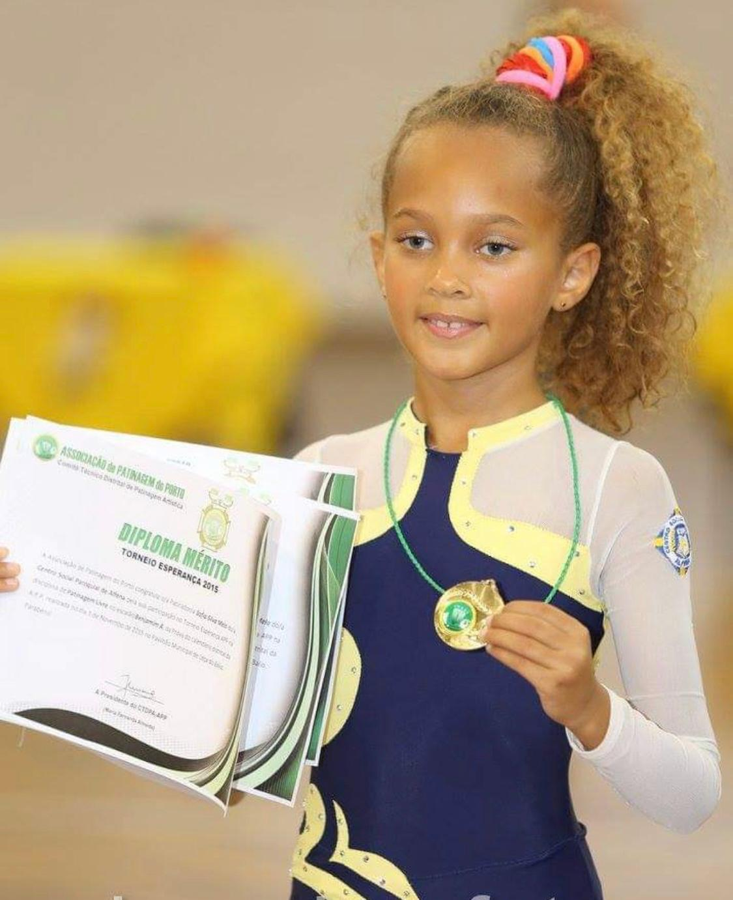

Descrição
Nós somos a Ana, a Matilde e a Sofia. Temos 17, 16 e 17 anos. Frequentamos o Efanor e o Camões, no Porto e acabamos de finalizar o 11º ano. Decidimos participar nesta atividade porque pretendiamos perceber se as nossas expectativas correspondiam a realidade, adquirir mais bases e conhecimentos sobre as bases essenciais deste curso, e assim perceber se este curso se adequaria a cada uma de nós. Inicialmente, foi um choque bastante grande, pois nenhuma de nós tinha qualquer tipo de bases de programação, porém com o passar dos dias, fomos assimilando melhor os conteúdos e percebendo melhor a lógica por trás de todo o processo de programar.
Atividades
Ana- Ao longo destes anos ja pratiquei volei,xadrez,ginástica ,basket e durante o ano letivo praticava natação 1 vez por semana. Gosto de fazer maratonas de séries, ir à praia, , viajar, ouvir música, fazer exercício e estar com amigos. Tenho 2 irmâs. Uma acabou agora o 12ºano e a outra mais velha que está em biotecnologia. Ainda não sei o que seguir na faculdade,mas percebi que engenharia informática não é para mim , mas talvez mais na parte das ciências como biotecnologia ou medicina dentária.
.
Sofia- Ao longo da minha vida já pratiquei várias desportos. Fiz patinagem e toquei violino durante 9 anos, andei no ballet, natação, basket e ginástica artística. Tenho uma irmã com 21 anos que estuda na Alemanha (engenharia mecânica) e o meu objetivo de vida é viajar pelo mundo todo. Para além disso, já fiz alguns trabalhos de modelo para a tiffosi e o continente e já participei em algumas publicidades. .
Matilde- Sou uma pessoa que já pratiquei diversos desportos, mas sem dúvida encontrei a minha paixão quando começei a praticar surf devido a toda a harmonia, clareza e paz que a atividade nos proporciona. Adoro música, vou a todos os concertos que me é possivel e tenho um estilo musical bastante variado. Também sou apaixonada pela leitura, tentei escrever um livro com cerca de 8 anos (que atualmente já perdi), e tive o meu primeiro trecho publicado quando tinha cerca de 13 anos.Contactos
Caso queiram contactar falem connosco diretamente. Beijinhos<3
.